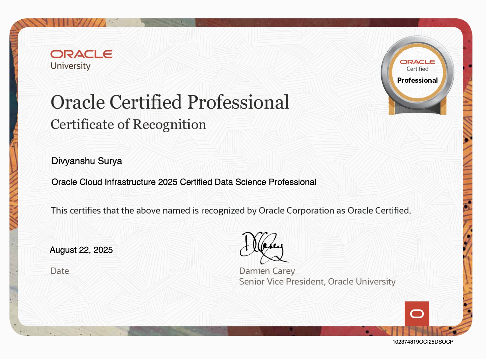
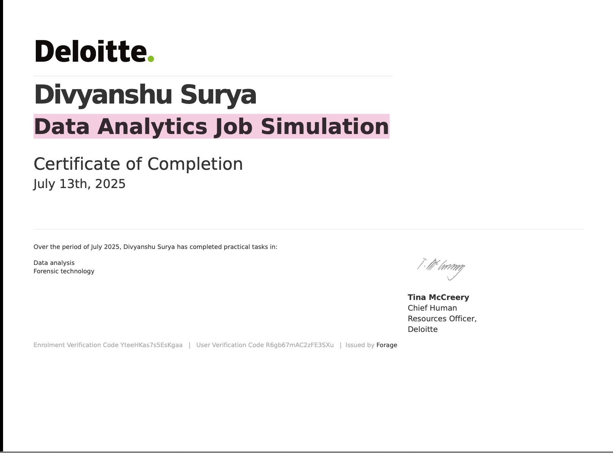
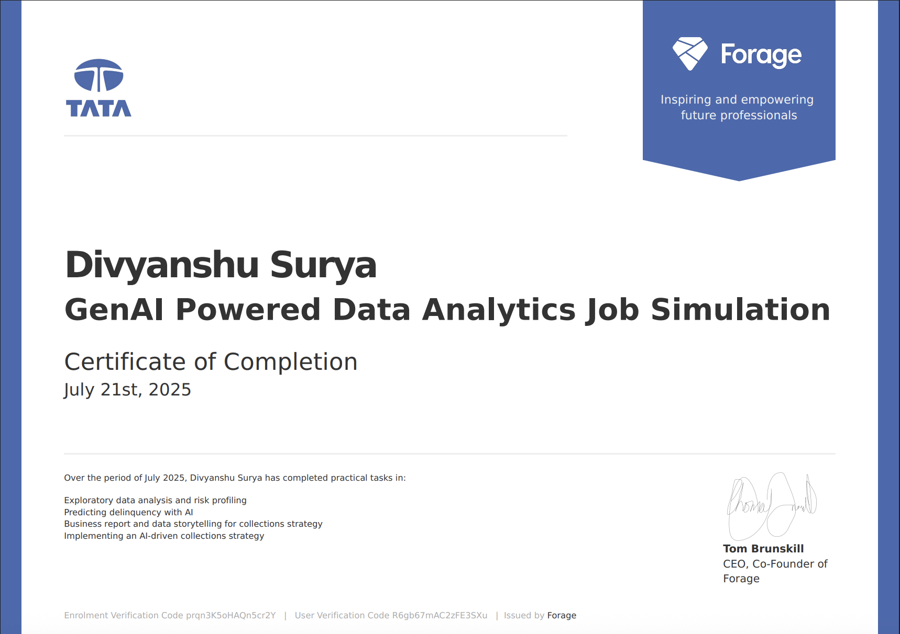
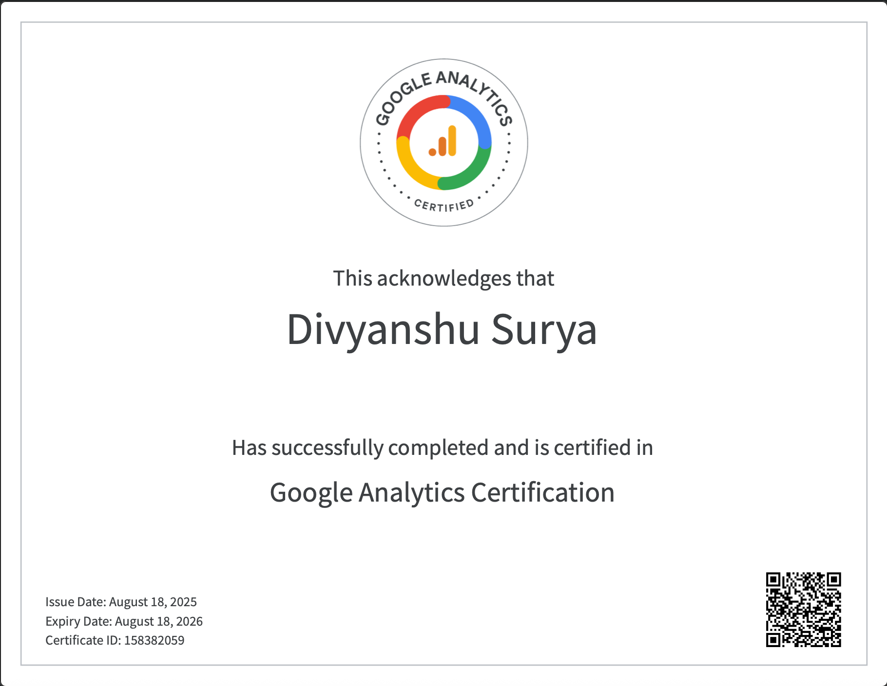
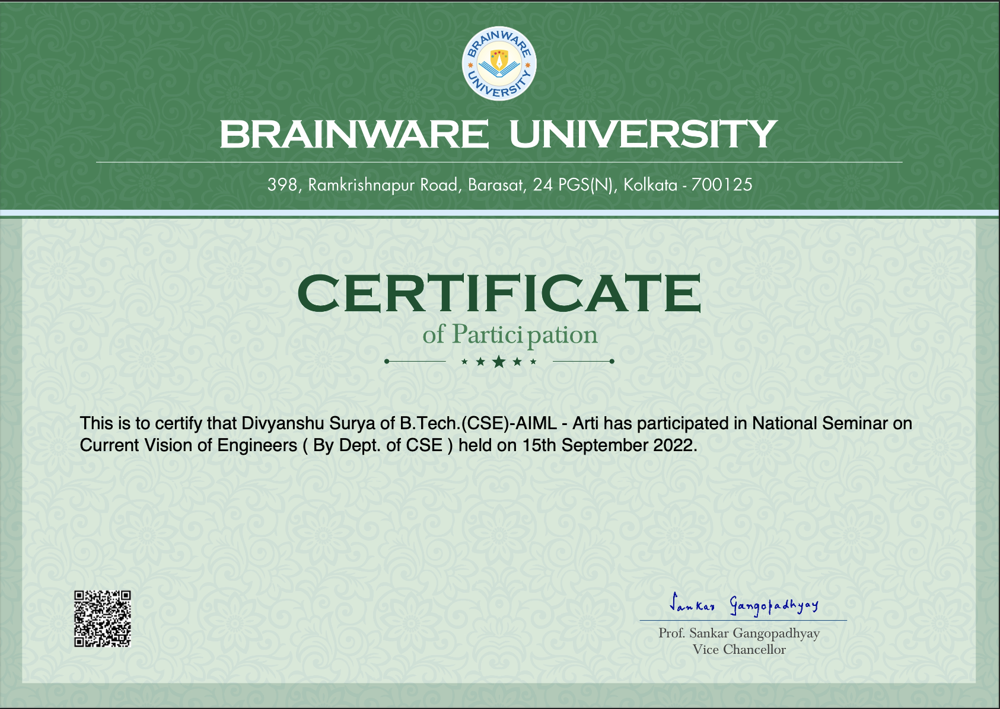

Experience
Web Developer Intern, Codsoft
August 2024 - September 2024
Developed and implemented a landing page, portfolio, and calculator using HTML, CSS, and JavaScript. Collaborated with a team to enhance UI components and performance.

WebGuru - Industrial Training
August 2024 - Oct 2024
Completed 3-month AWS training at WebGuru. Hands-on experience with EC2, S3, RDS, and CloudFormation for deploying and managing cloud apps.

Oracle Cloud Infrastructure 2025 Certified Data Science Professional, Oracle
August 2025
Validated expertise in building, training, and deploying machine learning models on Oracle Cloud. Demonstrated skills in data preparation, model evaluation, and scalable cloud-based workflows.

Delitte Data Analytics Job Simulation
July 2025
Developed practical skills in interpreting data, identifying trends, and applying analytical tools in a business context.

GenAl Powered Data Analytics Job Simulation
July 2025
Applying AI for data analysis, risk profiling, and delinquency prediction. Gained hands-on experience in AI-driven business reporting, storytelling, and collections strategy implementation.

Google Analytics
August 2025
Demonstrating proficiency in tracking, analyzing, and interpreting web performance data. Skilled in leveraging analytics tools to drive data-informed marketing and business decisions.

Seminar
Current Vision of Engineers
15 Sep 2022
Participated in the National Seminar on Current Vision of Engineers, organized by the Department of CSE on 15th September 2022, gaining insights into evolving engineering trends and professional perspectives.

Skill-Based Certifications
25 August 2024
Career Essentials in Cybersecurity by Successfully completed the "Career Essentials in Cybersecurity" course offered by Microsoft and LinkedIn, gaining foundational knowledge in cybersecurity principles, threat protection, network security, and risk management practices essential for entry-level roles in the field.

Skill-Based Certifications
4 May 2024
Completed the "Learning Data Analytics: Foundations" course, building a strong understanding of core data concepts including data types, collection methods, analysis processes, and the role of data in business decision-making.

Skill-Based Certifications
4 May 2024
Gained foundational knowledge of AI, including machine learning, neural networks, and real-world applications.